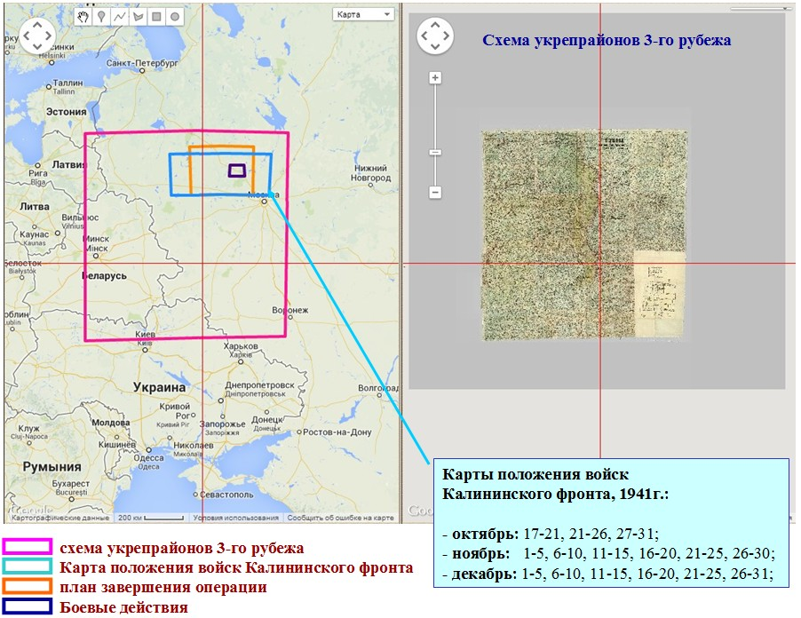
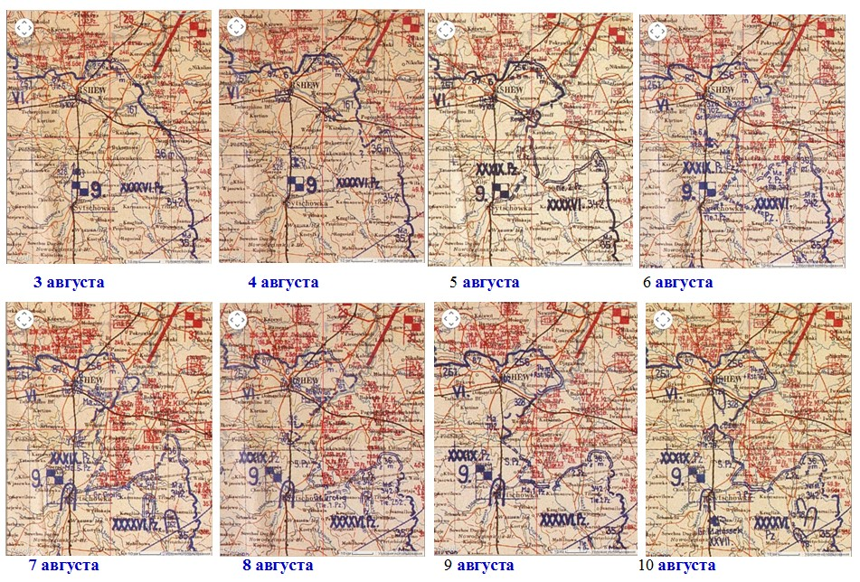
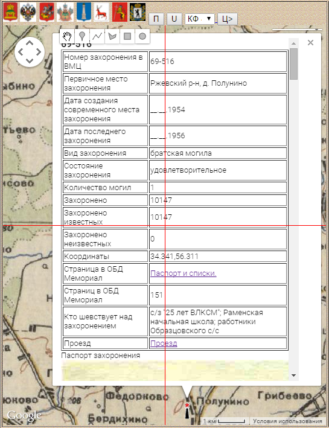
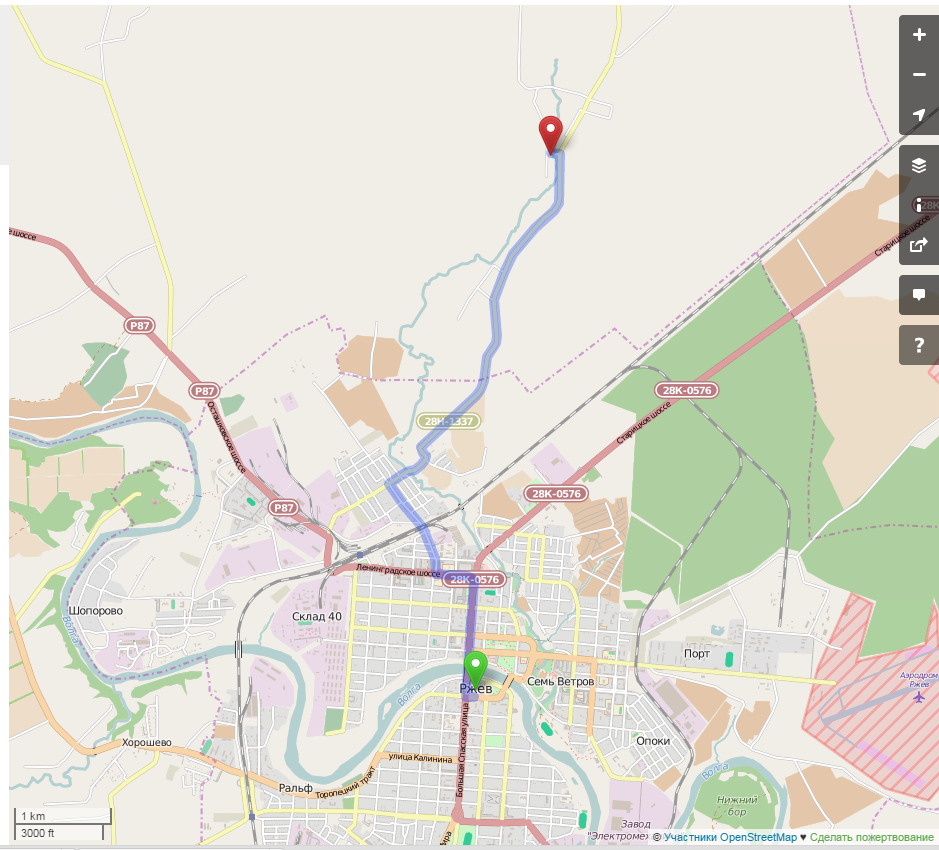
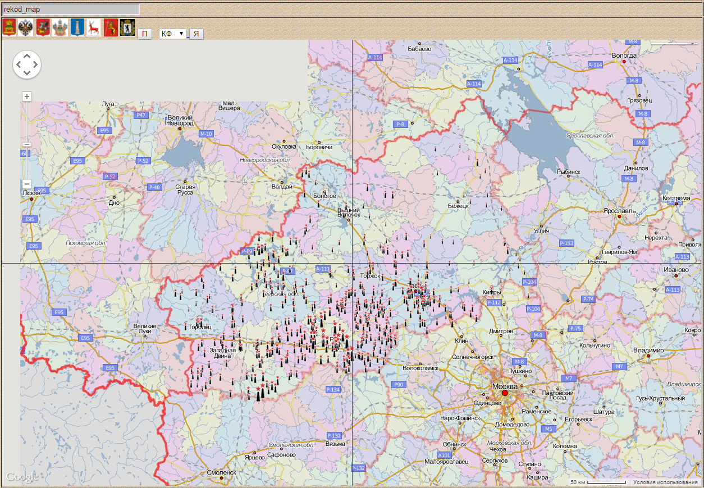
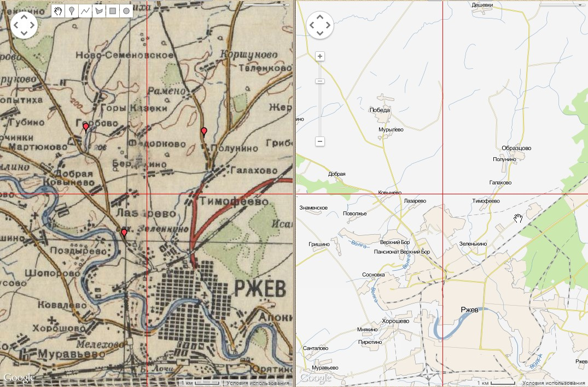

На ресурсе "Обработка и представление архивных карт" http://boxpis.ru/ размещены советские и германские карты периода Великой Отечественной войны.


Также размещена интерактивная карта Воинских захоронений Тверской области.


Семантическая информация по конкретному захоронению содержит:
- паспортные данные по данным ОБД (номер, название, место, количество захороненных, схему расположения захоронения);
- URL ссылки (паспорт захоронения в ОБД «Мемориал», маршрут проезда к захоронению);
- URL страницы списка ВЗ Тверской области.
Рекомендуется использовать браузер Chrome.
В качестве современной карты рекомендуется использовать карту геопортала "Рекод", например,

или две карты на экране (для отображения карты ВЗ под правой картой необходимо нажать Импорт)

С вопросами по использованию ресурса обращаться к Владимиру Геннадьевичу Щекотилову,
e-mail: globus-t@yandex.ru
|